Queens Venture Capital Planning Document
Read the complete supplied reference online, or download the original file.
Original source material, including its historical dates and proposals.
Page 1 of 16
{kind=link}
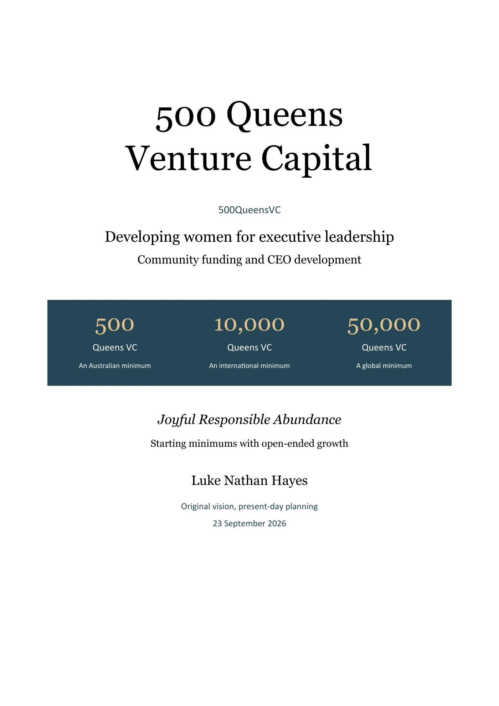
Read selectable text for page 1
Text extracted from this page. Use the page image for its original layout, tables and figures.
Venture Capital
500QueensVC
Developing women for executive leadership
Community funding and CEO development
500
Queens VC
An Australian minimum
10,000
Queens VC
An international minimum
50,000
Queens VC
A global minimum
Joyful Responsible Abundance
Starting minimums with open-ended growth
Luke Nathan Hayes
Original vision, present-day planning
23 September 2026
Page 2 of 16
{kind=link}
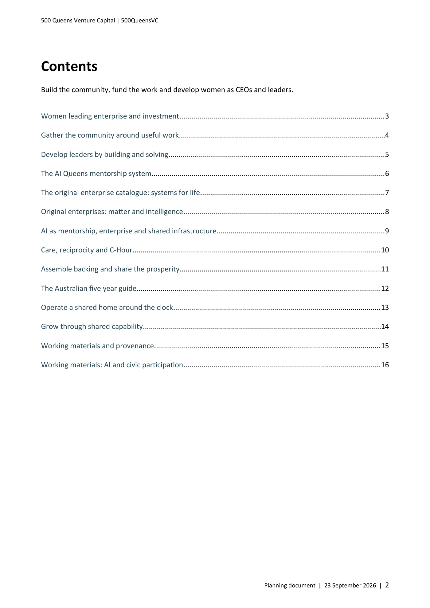
Read selectable text for page 2
Text extracted from this page. Use the page image for its original layout, tables and figures.
Planning document | 23 September 2026 | 2
Contents
Build the community, fund the work and develop women as CEOs and leaders.
Women leading enterprise and investment.......................................................................................................3
Gather the community around useful work.......................................................................................................4
Develop leaders by building and solving.............................................................................................................5
The AI Queens mentorship system.....................................................................................................................6
The original enterprise catalogue: systems for life.............................................................................................7
Original enterprises: matter and intelligence.....................................................................................................8
AI as mentorship, enterprise and shared infrastructure....................................................................................9
Care, reciprocity and C-Hour.............................................................................................................................10
Assemble backing and share the prosperity.....................................................................................................11
The Australian five year guide...........................................................................................................................12
Operate a shared home around the clock........................................................................................................13
Grow through shared capability.......................................................................................................................14
Working materials and provenance..................................................................................................................15
Working materials: AI and civic participation...................................................................................................16
Page 3 of 16
{kind=link}
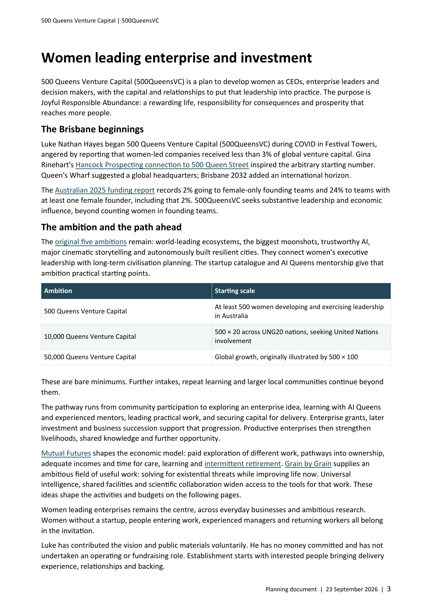
Read selectable text for page 3
Text extracted from this page. Use the page image for its original layout, tables and figures.
Planning document | 23 September 2026 | 3
Women leading enterprise and investment
500 Queens Venture Capital (500QueensVC) is a plan to develop women as CEOs, enterprise leaders and
decision makers, with the capital and relationships to put that leadership into practice. The purpose is
Joyful Responsible Abundance: a rewarding life, responsibility for consequences and prosperity that
reaches more people.
The Brisbane beginnings
Luke Nathan Hayes began 500 Queens Venture Capital (500QueensVC) during COVID in Festival Towers,
angered by reporting that women-led companies received less than 3% of global venture capital. Gina
Rinehart's Hancock Prospecting connection to 500 Queen Street inspired the arbitrary starting number.
Queen's Wharf suggested a global headquarters; Brisbane 2032 added an international horizon.
The Australian 2025 funding report records 2% going to female-only founding teams and 24% to teams with
at least one female founder, including that 2%. 500QueensVC seeks substantive leadership and economic
influence, beyond counting women in founding teams.
The ambition and the path ahead
The original five ambitions remain: world-leading ecosystems, the biggest moonshots, trustworthy AI,
major cinematic storytelling and autonomously built resilient cities. They connect women's executive
leadership with long-term civilisation planning. The startup catalogue and AI Queens mentorship give that
ambition practical starting points.
Ambition Starting scale
500 Queens Venture Capital At least 500 women developing and exercising leadership
in Australia
10,000 Queens Venture Capital 500 × 20 across UNG20 nations, seeking United Nations
involvement
50,000 Queens Venture Capital Global growth, originally illustrated by 500 × 100
These are bare minimums. Further intakes, repeat learning and larger local communities continue beyond
them.
The pathway runs from community participation to exploring an enterprise idea, learning with AI Queens
and experienced mentors, leading practical work, and securing capital for delivery. Enterprise grants, later
investment and business succession support that progression. Productive enterprises then strengthen
livelihoods, shared knowledge and further opportunity.
Mutual Futures shapes the economic model: paid exploration of different work, pathways into ownership,
adequate incomes and time for care, learning and intermittent retirement. Grain by Grain supplies an
ambitious field of useful work: solving for existential threats while improving life now. Universal
intelligence, shared facilities and scientific collaboration widen access to the tools for that work. These
ideas shape the activities and budgets on the following pages.
Women leading enterprises remains the centre, across everyday businesses and ambitious research.
Women without a startup, people entering work, experienced managers and returning workers all belong
in the invitation.
Luke has contributed the vision and public materials voluntarily. He has no money committed and has not
undertaken an operating or fundraising role. Establishment starts with interested people bringing delivery
experience, relationships and backing.
Page 4 of 16
{kind=link}
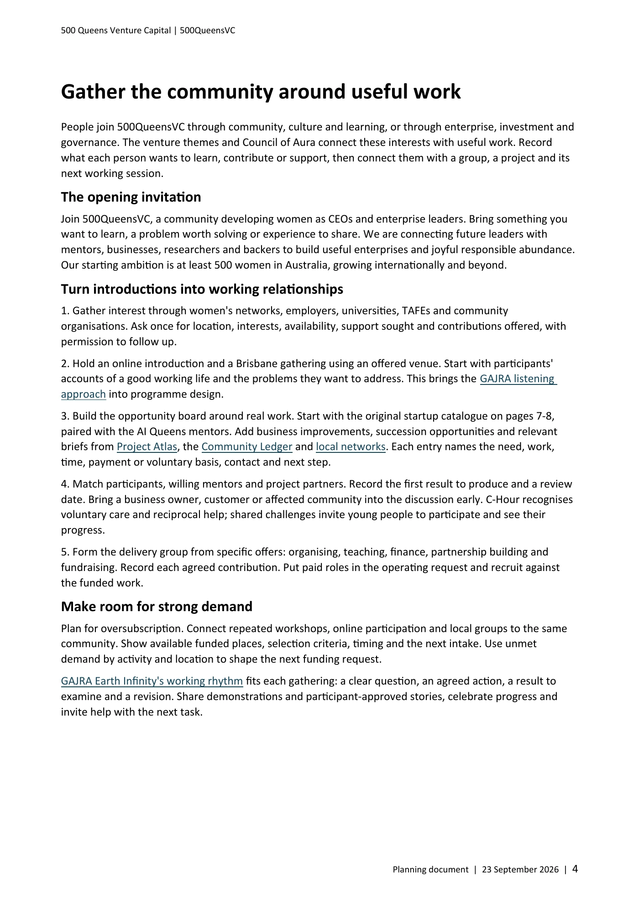
Read selectable text for page 4
Text extracted from this page. Use the page image for its original layout, tables and figures.
Planning document | 23 September 2026 | 4
Gather the community around useful work
People join 500QueensVC through community, culture and learning, or through enterprise, investment and
governance. The venture themes and Council of Aura connect these interests with useful work. Record
what each person wants to learn, contribute or support, then connect them with a group, a project and its
next working session.
The opening invitation
Join 500QueensVC, a community developing women as CEOs and enterprise leaders. Bring something you
want to learn, a problem worth solving or experience to share. We are connecting future leaders with
mentors, businesses, researchers and backers to build useful enterprises and joyful responsible abundance.
Our starting ambition is at least 500 women in Australia, growing internationally and beyond.
Turn introductions into working relationships
1. Gather interest through women's networks, employers, universities, TAFEs and community
organisations. Ask once for location, interests, availability, support sought and contributions offered, with
permission to follow up.
2. Hold an online introduction and a Brisbane gathering using an offered venue. Start with participants'
accounts of a good working life and the problems they want to address. This brings the GAJRA listening
approach into programme design.
3. Build the opportunity board around real work. Start with the original startup catalogue on pages 7-8,
paired with the AI Queens mentors. Add business improvements, succession opportunities and relevant
briefs from Project Atlas, the Community Ledger and local networks. Each entry names the need, work,
time, payment or voluntary basis, contact and next step.
4. Match participants, willing mentors and project partners. Record the first result to produce and a review
date. Bring a business owner, customer or affected community into the discussion early. C-Hour recognises
voluntary care and reciprocal help; shared challenges invite young people to participate and see their
progress.
5. Form the delivery group from specific offers: organising, teaching, finance, partnership building and
fundraising. Record each agreed contribution. Put paid roles in the operating request and recruit against
the funded work.
Make room for strong demand
Plan for oversubscription. Connect repeated workshops, online participation and local groups to the same
community. Show available funded places, selection criteria, timing and the next intake. Use unmet
demand by activity and location to shape the next funding request.
GAJRA Earth Infinity's working rhythm fits each gathering: a clear question, an agreed action, a result to
examine and a revision. Share demonstrations and participant-approved stories, celebrate progress and
invite help with the next task.
Page 5 of 16
{kind=link}
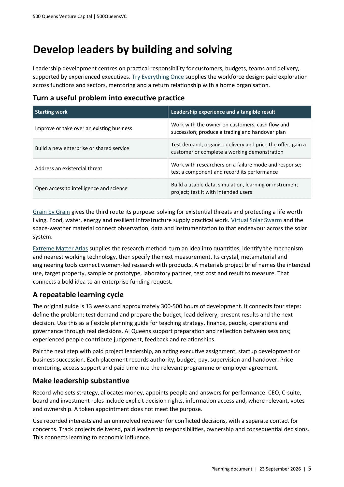
Read selectable text for page 5
Text extracted from this page. Use the page image for its original layout, tables and figures.
Planning document | 23 September 2026 | 5
Develop leaders by building and solving
Leadership development centres on practical responsibility for customers, budgets, teams and delivery,
supported by experienced executives. Try Everything Once supplies the workforce design: paid exploration
across functions and sectors, mentoring and a return relationship with a home organisation.
Turn a useful problem into executive practice
Starting work Leadership experience and a tangible result
Improve or take over an existing business Work with the owner on customers, cash flow and
succession; produce a trading and handover plan
Build a new enterprise or shared service Test demand, organise delivery and price the offer; gain a
customer or complete a working demonstration
Address an existential threat Work with researchers on a failure mode and response;
test a component and record its performance
Open access to intelligence and science Build a usable data, simulation, learning or instrument
project; test it with intended users
Grain by Grain gives the third route its purpose: solving for existential threats and protecting a life worth
living. Food, water, energy and resilient infrastructure supply practical work. Virtual Solar Swarm and the
space-weather material connect observation, data and instrumentation to that endeavour across the solar
system.
Extreme Matter Atlas supplies the research method: turn an idea into quantities, identify the mechanism
and nearest working technology, then specify the next measurement. Its crystal, metamaterial and
engineering tools connect women-led research with products. A materials project brief names the intended
use, target property, sample or prototype, laboratory partner, test cost and result to measure. That
connects a bold idea to an enterprise funding request.
A repeatable learning cycle
The original guide is 13 weeks and approximately 300-500 hours of development. It connects four steps:
define the problem; test demand and prepare the budget; lead delivery; present results and the next
decision. Use this as a flexible planning guide for teaching strategy, finance, people, operations and
governance through real decisions. AI Queens support preparation and reflection between sessions;
experienced people contribute judgement, feedback and relationships.
Pair the next step with paid project leadership, an acting executive assignment, startup development or
business succession. Each placement records authority, budget, pay, supervision and handover. Price
mentoring, access support and paid time into the relevant programme or employer agreement.
Make leadership substantive
Record who sets strategy, allocates money, appoints people and answers for performance. CEO, C-suite,
board and investment roles include explicit decision rights, information access and, where relevant, votes
and ownership. A token appointment does not meet the purpose.
Use recorded interests and an uninvolved reviewer for conflicted decisions, with a separate contact for
concerns. Track projects delivered, paid leadership responsibilities, ownership and consequential decisions.
This connects learning to economic influence.
Page 6 of 16
{kind=link}
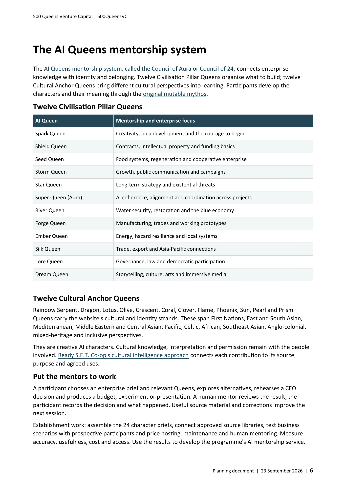
Read selectable text for page 6
Text extracted from this page. Use the page image for its original layout, tables and figures.
Planning document | 23 September 2026 | 6
The AI Queens mentorship system
The AI Queens mentorship system, called the Council of Aura or Council of 24, connects enterprise
knowledge with identity and belonging. Twelve Civilisation Pillar Queens organise what to build; twelve
Cultural Anchor Queens bring different cultural perspectives into learning. Participants develop the
characters and their meaning through the original mutable mythos.
Twelve Civilisation Pillar Queens
AI Queen Mentorship and enterprise focus
Spark Queen Creativity, idea development and the courage to begin
Shield Queen Contracts, intellectual property and funding basics
Seed Queen Food systems, regeneration and cooperative enterprise
Storm Queen Growth, public communication and campaigns
Star Queen Long-term strategy and existential threats
Super Queen (Aura) AI coherence, alignment and coordination across projects
River Queen Water security, restoration and the blue economy
Forge Queen Manufacturing, trades and working prototypes
Ember Queen Energy, hazard resilience and local systems
Silk Queen Trade, export and Asia-Pacific connections
Lore Queen Governance, law and democratic participation
Dream Queen Storytelling, culture, arts and immersive media
Twelve Cultural Anchor Queens
Rainbow Serpent, Dragon, Lotus, Olive, Crescent, Coral, Clover, Flame, Phoenix, Sun, Pearl and Prism
Queens carry the website's cultural and identity strands. These span First Nations, East and South Asian,
Mediterranean, Middle Eastern and Central Asian, Pacific, Celtic, African, Southeast Asian, Anglo-colonial,
mixed-heritage and inclusive perspectives.
They are creative AI characters. Cultural knowledge, interpretation and permission remain with the people
involved. Ready S.E.T. Co-op's cultural intelligence approach connects each contribution to its source,
purpose and agreed uses.
Put the mentors to work
A participant chooses an enterprise brief and relevant Queens, explores alternatives, rehearses a CEO
decision and produces a budget, experiment or presentation. A human mentor reviews the result; the
participant records the decision and what happened. Useful source material and corrections improve the
next session.
Establishment work: assemble the 24 character briefs, connect approved source libraries, test business
scenarios with prospective participants and price hosting, maintenance and human mentoring. Measure
accuracy, usefulness, cost and access. Use the results to develop the programme's AI mentorship service.
Page 7 of 16
{kind=link}
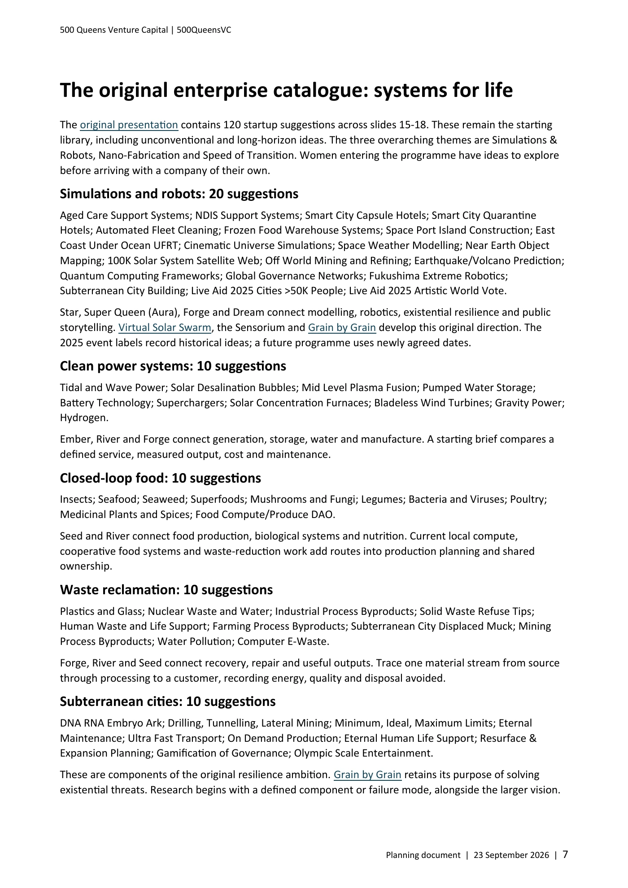
Read selectable text for page 7
Text extracted from this page. Use the page image for its original layout, tables and figures.
Planning document | 23 September 2026 | 7
The original enterprise catalogue: systems for life
The original presentation contains 120 startup suggestions across slides 15-18. These remain the starting
library, including unconventional and long-horizon ideas. The three overarching themes are Simulations &
Robots, Nano-Fabrication and Speed of Transition. Women entering the programme have ideas to explore
before arriving with a company of their own.
Simulations and robots: 20 suggestions
Aged Care Support Systems; NDIS Support Systems; Smart City Capsule Hotels; Smart City Quarantine
Hotels; Automated Fleet Cleaning; Frozen Food Warehouse Systems; Space Port Island Construction; East
Coast Under Ocean UFRT; Cinematic Universe Simulations; Space Weather Modelling; Near Earth Object
Mapping; 100K Solar System Satellite Web; Off World Mining and Refining; Earthquake/Volcano Prediction;
Quantum Computing Frameworks; Global Governance Networks; Fukushima Extreme Robotics;
Subterranean City Building; Live Aid 2025 Cities >50K People; Live Aid 2025 Artistic World Vote.
Star, Super Queen (Aura), Forge and Dream connect modelling, robotics, existential resilience and public
storytelling. Virtual Solar Swarm, the Sensorium and Grain by Grain develop this original direction. The
2025 event labels record historical ideas; a future programme uses newly agreed dates.
Clean power systems: 10 suggestions
Tidal and Wave Power; Solar Desalination Bubbles; Mid Level Plasma Fusion; Pumped Water Storage;
Battery Technology; Superchargers; Solar Concentration Furnaces; Bladeless Wind Turbines; Gravity Power;
Hydrogen.
Ember, River and Forge connect generation, storage, water and manufacture. A starting brief compares a
defined service, measured output, cost and maintenance.
Closed-loop food: 10 suggestions
Insects; Seafood; Seaweed; Superfoods; Mushrooms and Fungi; Legumes; Bacteria and Viruses; Poultry;
Medicinal Plants and Spices; Food Compute/Produce DAO.
Seed and River connect food production, biological systems and nutrition. Current local compute,
cooperative food systems and waste-reduction work add routes into production planning and shared
ownership.
Waste reclamation: 10 suggestions
Plastics and Glass; Nuclear Waste and Water; Industrial Process Byproducts; Solid Waste Refuse Tips;
Human Waste and Life Support; Farming Process Byproducts; Subterranean City Displaced Muck; Mining
Process Byproducts; Water Pollution; Computer E-Waste.
Forge, River and Seed connect recovery, repair and useful outputs. Trace one material stream from source
through processing to a customer, recording energy, quality and disposal avoided.
Subterranean cities: 10 suggestions
DNA RNA Embryo Ark; Drilling, Tunnelling, Lateral Mining; Minimum, Ideal, Maximum Limits; Eternal
Maintenance; Ultra Fast Transport; On Demand Production; Eternal Human Life Support; Resurface &
Expansion Planning; Gamification of Governance; Olympic Scale Entertainment.
These are components of the original resilience ambition. Grain by Grain retains its purpose of solving
existential threats. Research begins with a defined component or failure mode, alongside the larger vision.
Page 8 of 16
{kind=link}
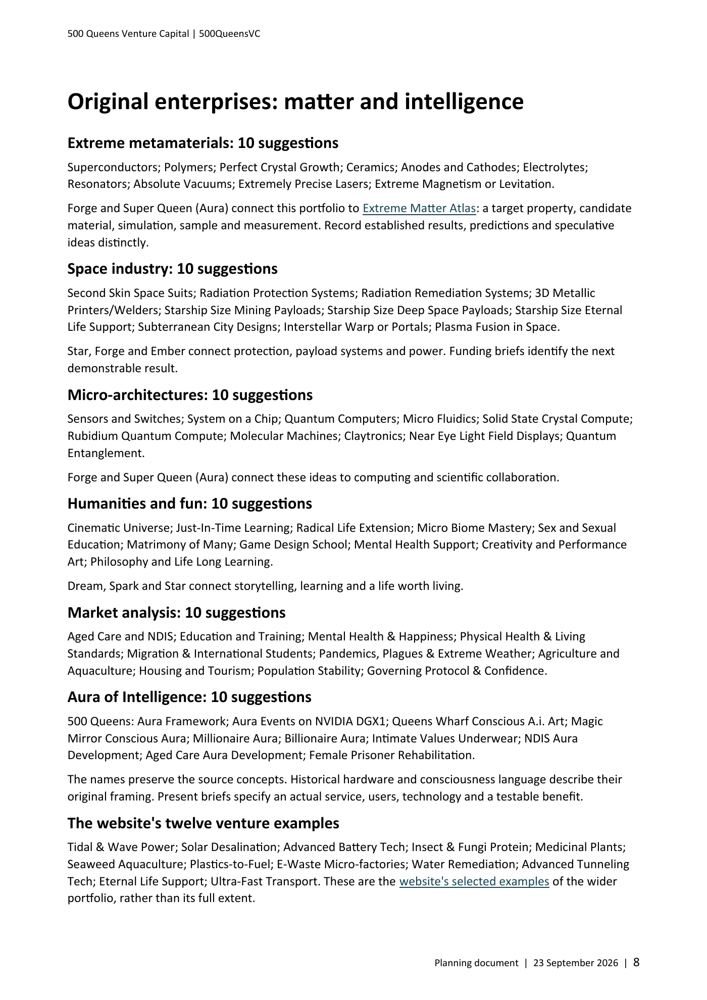
Read selectable text for page 8
Text extracted from this page. Use the page image for its original layout, tables and figures.
Planning document | 23 September 2026 | 8
Original enterprises: matter and intelligence
Extreme metamaterials: 10 suggestions
Superconductors; Polymers; Perfect Crystal Growth; Ceramics; Anodes and Cathodes; Electrolytes;
Resonators; Absolute Vacuums; Extremely Precise Lasers; Extreme Magnetism or Levitation.
Forge and Super Queen (Aura) connect this portfolio to Extreme Matter Atlas: a target property, candidate
material, simulation, sample and measurement. Record established results, predictions and speculative
ideas distinctly.
Space industry: 10 suggestions
Second Skin Space Suits; Radiation Protection Systems; Radiation Remediation Systems; 3D Metallic
Printers/Welders; Starship Size Mining Payloads; Starship Size Deep Space Payloads; Starship Size Eternal
Life Support; Subterranean City Designs; Interstellar Warp or Portals; Plasma Fusion in Space.
Star, Forge and Ember connect protection, payload systems and power. Funding briefs identify the next
demonstrable result.
Micro-architectures: 10 suggestions
Sensors and Switches; System on a Chip; Quantum Computers; Micro Fluidics; Solid State Crystal Compute;
Rubidium Quantum Compute; Molecular Machines; Claytronics; Near Eye Light Field Displays; Quantum
Entanglement.
Forge and Super Queen (Aura) connect these ideas to computing and scientific collaboration.
Humanities and fun: 10 suggestions
Cinematic Universe; Just-In-Time Learning; Radical Life Extension; Micro Biome Mastery; Sex and Sexual
Education; Matrimony of Many; Game Design School; Mental Health Support; Creativity and Performance
Art; Philosophy and Life Long Learning.
Dream, Spark and Star connect storytelling, learning and a life worth living.
Market analysis: 10 suggestions
Aged Care and NDIS; Education and Training; Mental Health & Happiness; Physical Health & Living
Standards; Migration & International Students; Pandemics, Plagues & Extreme Weather; Agriculture and
Aquaculture; Housing and Tourism; Population Stability; Governing Protocol & Confidence.
Aura of Intelligence: 10 suggestions
500 Queens: Aura Framework; Aura Events on NVIDIA DGX1; Queens Wharf Conscious A.i. Art; Magic
Mirror Conscious Aura; Millionaire Aura; Billionaire Aura; Intimate Values Underwear; NDIS Aura
Development; Aged Care Aura Development; Female Prisoner Rehabilitation.
The names preserve the source concepts. Historical hardware and consciousness language describe their
original framing. Present briefs specify an actual service, users, technology and a testable benefit.
The website's twelve venture examples
Tidal & Wave Power; Solar Desalination; Advanced Battery Tech; Insect & Fungi Protein; Medicinal Plants;
Seaweed Aquaculture; Plastics-to-Fuel; E-Waste Micro-factories; Water Remediation; Advanced Tunneling
Tech; Eternal Life Support; Ultra-Fast Transport. These are the website's selected examples of the wider
portfolio, rather than its full extent.
Page 9 of 16
{kind=link}
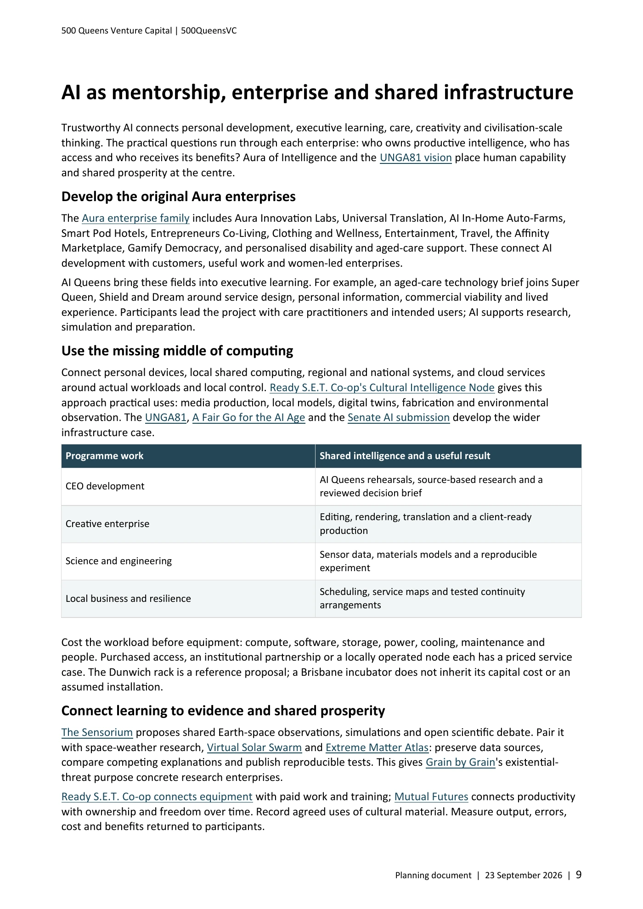
Read selectable text for page 9
Text extracted from this page. Use the page image for its original layout, tables and figures.
Planning document | 23 September 2026 | 9
AI as mentorship, enterprise and shared infrastructure
Trustworthy AI connects personal development, executive learning, care, creativity and civilisation-scale
thinking. The practical questions run through each enterprise: who owns productive intelligence, who has
access and who receives its benefits? Aura of Intelligence and the UNGA81 vision place human capability
and shared prosperity at the centre.
Develop the original Aura enterprises
The Aura enterprise family includes Aura Innovation Labs, Universal Translation, AI In-Home Auto-Farms,
Smart Pod Hotels, Entrepreneurs Co-Living, Clothing and Wellness, Entertainment, Travel, the Affinity
Marketplace, Gamify Democracy, and personalised disability and aged-care support. These connect AI
development with customers, useful work and women-led enterprises.
AI Queens bring these fields into executive learning. For example, an aged-care technology brief joins Super
Queen, Shield and Dream around service design, personal information, commercial viability and lived
experience. Participants lead the project with care practitioners and intended users; AI supports research,
simulation and preparation.
Use the missing middle of computing
Connect personal devices, local shared computing, regional and national systems, and cloud services
around actual workloads and local control. Ready S.E.T. Co-op's Cultural Intelligence Node gives this
approach practical uses: media production, local models, digital twins, fabrication and environmental
observation. The UNGA81, A Fair Go for the AI Age and the Senate AI submission develop the wider
infrastructure case.
Programme work Shared intelligence and a useful result
CEO development AI Queens rehearsals, source-based research and a
reviewed decision brief
Creative enterprise Editing, rendering, translation and a client-ready
production
Science and engineering Sensor data, materials models and a reproducible
experiment
Local business and resilience Scheduling, service maps and tested continuity
arrangements
Cost the workload before equipment: compute, software, storage, power, cooling, maintenance and
people. Purchased access, an institutional partnership or a locally operated node each has a priced service
case. The Dunwich rack is a reference proposal; a Brisbane incubator does not inherit its capital cost or an
assumed installation.
Connect learning to evidence and shared prosperity
The Sensorium proposes shared Earth-space observations, simulations and open scientific debate. Pair it
with space-weather research, Virtual Solar Swarm and Extreme Matter Atlas: preserve data sources,
compare competing explanations and publish reproducible tests. This gives Grain by Grain's existential-
threat purpose concrete research enterprises.
Ready S.E.T. Co-op connects equipment with paid work and training; Mutual Futures connects productivity
with ownership and freedom over time. Record agreed uses of cultural material. Measure output, errors,
cost and benefits returned to participants.
Page 10 of 16
{kind=link}
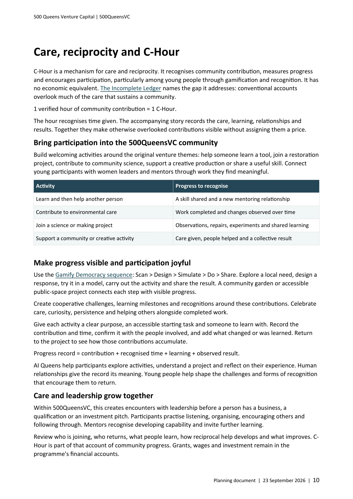
Read selectable text for page 10
Text extracted from this page. Use the page image for its original layout, tables and figures.
Planning document | 23 September 2026 | 10
Care, reciprocity and C-Hour
C-Hour is a mechanism for care and reciprocity. It recognises community contribution, measures progress
and encourages participation, particularly among young people through gamification and recognition. It has
no economic equivalent. The Incomplete Ledger names the gap it addresses: conventional accounts
overlook much of the care that sustains a community.
1 verified hour of community contribution = 1 C-Hour.
The hour recognises time given. The accompanying story records the care, learning, relationships and
results. Together they make otherwise overlooked contributions visible without assigning them a price.
Bring participation into the 500QueensVC community
Build welcoming activities around the original venture themes: help someone learn a tool, join a restoration
project, contribute to community science, support a creative production or share a useful skill. Connect
young participants with women leaders and mentors through work they find meaningful.
Activity Progress to recognise
Learn and then help another person A skill shared and a new mentoring relationship
Contribute to environmental care Work completed and changes observed over time
Join a science or making project Observations, repairs, experiments and shared learning
Support a community or creative activity Care given, people helped and a collective result
Make progress visible and participation joyful
Use the Gamify Democracy sequence: Scan > Design > Simulate > Do > Share. Explore a local need, design a
response, try it in a model, carry out the activity and share the result. A community garden or accessible
public-space project connects each step with visible progress.
Create cooperative challenges, learning milestones and recognitions around these contributions. Celebrate
care, curiosity, persistence and helping others alongside completed work.
Give each activity a clear purpose, an accessible starting task and someone to learn with. Record the
contribution and time, confirm it with the people involved, and add what changed or was learned. Return
to the project to see how those contributions accumulate.
Progress record = contribution + recognised time + learning + observed result.
AI Queens help participants explore activities, understand a project and reflect on their experience. Human
relationships give the record its meaning. Young people help shape the challenges and forms of recognition
that encourage them to return.
Care and leadership grow together
Within 500QueensVC, this creates encounters with leadership before a person has a business, a
qualification or an investment pitch. Participants practise listening, organising, encouraging others and
following through. Mentors recognise developing capability and invite further learning.
Review who is joining, who returns, what people learn, how reciprocal help develops and what improves. C-
Hour is part of that account of community progress. Grants, wages and investment remain in the
programme's financial accounts.
Page 11 of 16
{kind=link}
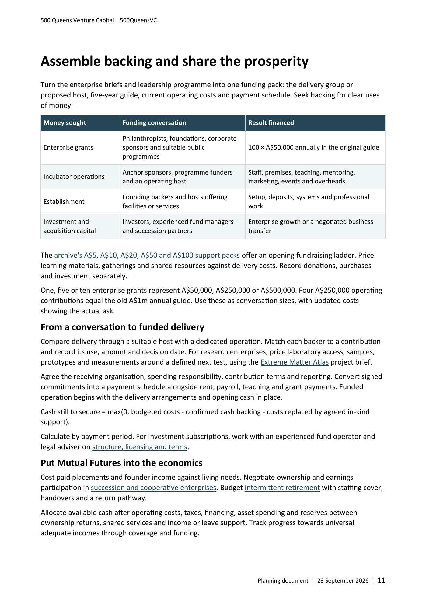
Read selectable text for page 11
Text extracted from this page. Use the page image for its original layout, tables and figures.
Planning document | 23 September 2026 | 11
Assemble backing and share the prosperity
Turn the enterprise briefs and leadership programme into one funding pack: the delivery group or
proposed host, five-year guide, current operating costs and payment schedule. Seek backing for clear uses
of money.
Money sought Funding conversation Result financed
Enterprise grants
Philanthropists, foundations, corporate
sponsors and suitable public
programmes
100 × A$50,000 annually in the original guide
Incubator operations Anchor sponsors, programme funders
and an operating host
Staff, premises, teaching, mentoring,
marketing, events and overheads
Establishment Founding backers and hosts offering
facilities or services
Setup, deposits, systems and professional
work
Investment and
acquisition capital
Investors, experienced fund managers
and succession partners
Enterprise growth or a negotiated business
transfer
The archive's A$5, A$10, A$20, A$50 and A$100 support packs offer an opening fundraising ladder. Price
learning materials, gatherings and shared resources against delivery costs. Record donations, purchases
and investment separately.
One, five or ten enterprise grants represent A$50,000, A$250,000 or A$500,000. Four A$250,000 operating
contributions equal the old A$1m annual guide. Use these as conversation sizes, with updated costs
showing the actual ask.
From a conversation to funded delivery
Compare delivery through a suitable host with a dedicated operation. Match each backer to a contribution
and record its use, amount and decision date. For research enterprises, price laboratory access, samples,
prototypes and measurements around a defined next test, using the Extreme Matter Atlas project brief.
Agree the receiving organisation, spending responsibility, contribution terms and reporting. Convert signed
commitments into a payment schedule alongside rent, payroll, teaching and grant payments. Funded
operation begins with the delivery arrangements and opening cash in place.
Cash still to secure = max(0, budgeted costs - confirmed cash backing - costs replaced by agreed in-kind
support).
Calculate by payment period. For investment subscriptions, work with an experienced fund operator and
legal adviser on structure, licensing and terms.
Put Mutual Futures into the economics
Cost paid placements and founder income against living needs. Negotiate ownership and earnings
participation in succession and cooperative enterprises. Budget intermittent retirement with staffing cover,
handovers and a return pathway.
Allocate available cash after operating costs, taxes, financing, asset spending and reserves between
ownership returns, shared services and income or leave support. Track progress towards universal
adequate incomes through coverage and funding.
Page 12 of 16
{kind=link}
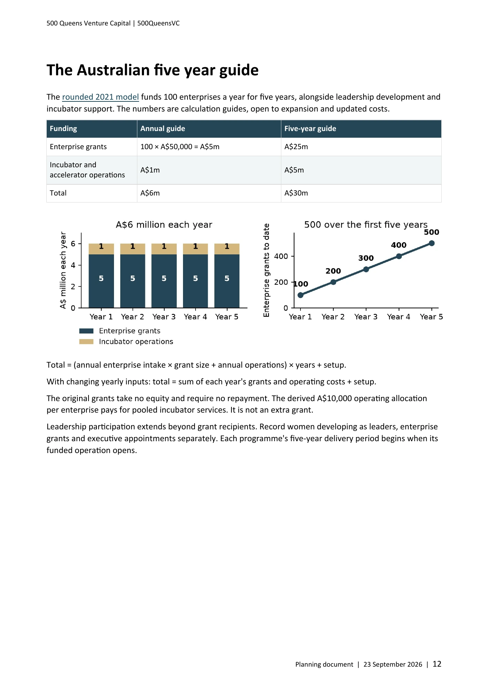
Read selectable text for page 12
Text extracted from this page. Use the page image for its original layout, tables and figures.
Planning document | 23 September 2026 | 12
The Australian five year guide
The rounded 2021 model funds 100 enterprises a year for five years, alongside leadership development and
incubator support. The numbers are calculation guides, open to expansion and updated costs.
Funding Annual guide Five-year guide
Enterprise grants 100 × A$50,000 = A$5m A$25m
Incubator and
accelerator operations A$1m A$5m
Total A$6m A$30m
Total = (annual enterprise intake × grant size + annual operations) × years + setup.
With changing yearly inputs: total = sum of each year's grants and operating costs + setup.
The original grants take no equity and require no repayment. The derived A$10,000 operating allocation
per enterprise pays for pooled incubator services. It is not an extra grant.
Leadership participation extends beyond grant recipients. Record women developing as leaders, enterprise
grants and executive appointments separately. Each programme's five-year delivery period begins when its
funded operation opens.
Page 13 of 16
{kind=link}
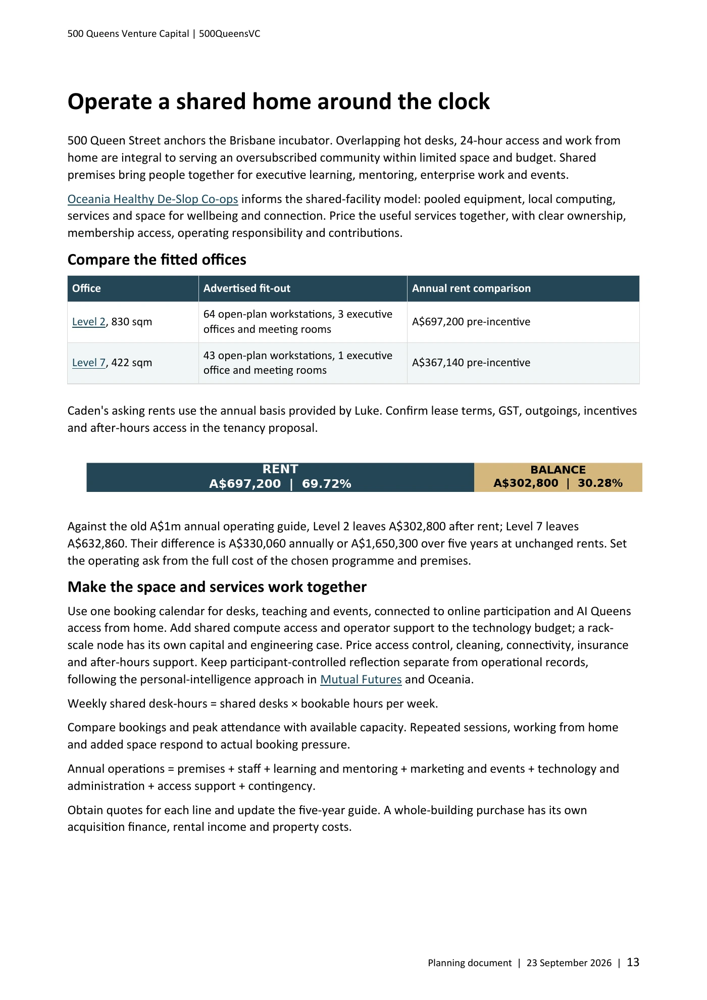
Read selectable text for page 13
Text extracted from this page. Use the page image for its original layout, tables and figures.
Planning document | 23 September 2026 | 13
Operate a shared home around the clock
500 Queen Street anchors the Brisbane incubator. Overlapping hot desks, 24-hour access and work from
home are integral to serving an oversubscribed community within limited space and budget. Shared
premises bring people together for executive learning, mentoring, enterprise work and events.
Oceania Healthy De-Slop Co-ops informs the shared-facility model: pooled equipment, local computing,
services and space for wellbeing and connection. Price the useful services together, with clear ownership,
membership access, operating responsibility and contributions.
Compare the fitted offices
Office Advertised fit-out Annual rent comparison
Level 2, 830 sqm 64 open-plan workstations, 3 executive
offices and meeting rooms A$697,200 pre-incentive
Level 7, 422 sqm 43 open-plan workstations, 1 executive
office and meeting rooms A$367,140 pre-incentive
Caden's asking rents use the annual basis provided by Luke. Confirm lease terms, GST, outgoings, incentives
and after-hours access in the tenancy proposal.
Against the old A$1m annual operating guide, Level 2 leaves A$302,800 after rent; Level 7 leaves
A$632,860. Their difference is A$330,060 annually or A$1,650,300 over five years at unchanged rents. Set
the operating ask from the full cost of the chosen programme and premises.
Make the space and services work together
Use one booking calendar for desks, teaching and events, connected to online participation and AI Queens
access from home. Add shared compute access and operator support to the technology budget; a rack-
scale node has its own capital and engineering case. Price access control, cleaning, connectivity, insurance
and after-hours support. Keep participant-controlled reflection separate from operational records,
following the personal-intelligence approach in Mutual Futures and Oceania.
Weekly shared desk-hours = shared desks × bookable hours per week.
Compare bookings and peak attendance with available capacity. Repeated sessions, working from home
and added space respond to actual booking pressure.
Annual operations = premises + staff + learning and mentoring + marketing and events + technology and
administration + access support + contingency.
Obtain quotes for each line and update the five-year guide. A whole-building purchase has its own
acquisition finance, rental income and property costs.
Page 14 of 16
{kind=link}
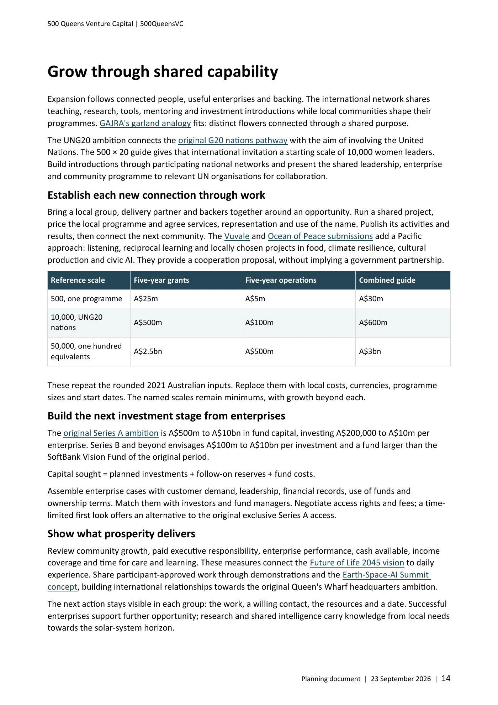
Read selectable text for page 14
Text extracted from this page. Use the page image for its original layout, tables and figures.
Planning document | 23 September 2026 | 14
Grow through shared capability
Expansion follows connected people, useful enterprises and backing. The international network shares
teaching, research, tools, mentoring and investment introductions while local communities shape their
programmes. GAJRA's garland analogy fits: distinct flowers connected through a shared purpose.
The UNG20 ambition connects the original G20 nations pathway with the aim of involving the United
Nations. The 500 × 20 guide gives that international invitation a starting scale of 10,000 women leaders.
Build introductions through participating national networks and present the shared leadership, enterprise
and community programme to relevant UN organisations for collaboration.
Establish each new connection through work
Bring a local group, delivery partner and backers together around an opportunity. Run a shared project,
price the local programme and agree services, representation and use of the name. Publish its activities and
results, then connect the next community. The Vuvale and Ocean of Peace submissions add a Pacific
approach: listening, reciprocal learning and locally chosen projects in food, climate resilience, cultural
production and civic AI. They provide a cooperation proposal, without implying a government partnership.
Reference scale Five-year grants Five-year operations Combined guide
500, one programme A$25m A$5m A$30m
10,000, UNG20
nations A$500m A$100m A$600m
50,000, one hundred
equivalents A$2.5bn A$500m A$3bn
These repeat the rounded 2021 Australian inputs. Replace them with local costs, currencies, programme
sizes and start dates. The named scales remain minimums, with growth beyond each.
Build the next investment stage from enterprises
The original Series A ambition is A$500m to A$10bn in fund capital, investing A$200,000 to A$10m per
enterprise. Series B and beyond envisages A$100m to A$10bn per investment and a fund larger than the
SoftBank Vision Fund of the original period.
Capital sought = planned investments + follow-on reserves + fund costs.
Assemble enterprise cases with customer demand, leadership, financial records, use of funds and
ownership terms. Match them with investors and fund managers. Negotiate access rights and fees; a time-
limited first look offers an alternative to the original exclusive Series A access.
Show what prosperity delivers
Review community growth, paid executive responsibility, enterprise performance, cash available, income
coverage and time for care and learning. These measures connect the Future of Life 2045 vision to daily
experience. Share participant-approved work through demonstrations and the Earth-Space-AI Summit
concept, building international relationships towards the original Queen's Wharf headquarters ambition.
The next action stays visible in each group: the work, a willing contact, the resources and a date. Successful
enterprises support further opportunity; research and shared intelligence carry knowledge from local needs
towards the solar-system horizon.
Page 15 of 16
{kind=link}
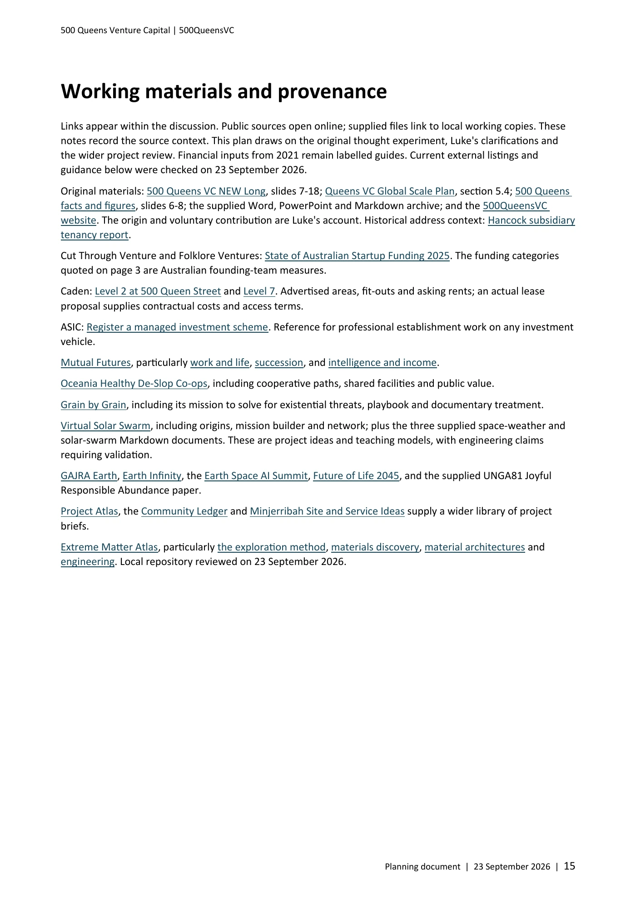
Read selectable text for page 15
Text extracted from this page. Use the page image for its original layout, tables and figures.
Planning document | 23 September 2026 | 15
Working materials and provenance
Links appear within the discussion. Public sources open online; supplied files link to local working copies. These
notes record the source context. This plan draws on the original thought experiment, Luke's clarifications and
the wider project review. Financial inputs from 2021 remain labelled guides. Current external listings and
guidance below were checked on 23 September 2026.
Original materials: 500 Queens VC NEW Long, slides 7-18; Queens VC Global Scale Plan, section 5.4; 500 Queens
facts and figures, slides 6-8; the supplied Word, PowerPoint and Markdown archive; and the 500QueensVC
website. The origin and voluntary contribution are Luke's account. Historical address context: Hancock subsidiary
tenancy report.
Cut Through Venture and Folklore Ventures: State of Australian Startup Funding 2025. The funding categories
quoted on page 3 are Australian founding-team measures.
Caden: Level 2 at 500 Queen Street and Level 7. Advertised areas, fit-outs and asking rents; an actual lease
proposal supplies contractual costs and access terms.
ASIC: Register a managed investment scheme. Reference for professional establishment work on any investment
vehicle.
Mutual Futures, particularly work and life, succession, and intelligence and income.
Oceania Healthy De-Slop Co-ops, including cooperative paths, shared facilities and public value.
Grain by Grain, including its mission to solve for existential threats, playbook and documentary treatment.
Virtual Solar Swarm, including origins, mission builder and network; plus the three supplied space-weather and
solar-swarm Markdown documents. These are project ideas and teaching models, with engineering claims
requiring validation.
GAJRA Earth, Earth Infinity, the Earth Space AI Summit, Future of Life 2045, and the supplied UNGA81 Joyful
Responsible Abundance paper.
Project Atlas, the Community Ledger and Minjerribah Site and Service Ideas supply a wider library of project
briefs.
Extreme Matter Atlas, particularly the exploration method, materials discovery, material architectures and
engineering. Local repository reviewed on 23 September 2026.
Page 16 of 16
{kind=link}
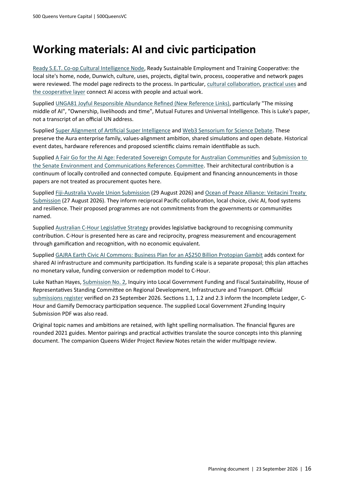
Read selectable text for page 16
Text extracted from this page. Use the page image for its original layout, tables and figures.
Planning document | 23 September 2026 | 16
Working materials: AI and civic participation
Ready S.E.T. Co-op Cultural Intelligence Node, Ready Sustainable Employment and Training Cooperative: the
local site's home, node, Dunwich, culture, uses, projects, digital twin, process, cooperative and network pages
were reviewed. The model page redirects to the process. In particular, cultural collaboration, practical uses and
the cooperative layer connect AI access with people and actual work.
Supplied UNGA81 Joyful Responsible Abundance Refined (New Reference Links), particularly "The missing
middle of AI", "Ownership, livelihoods and time", Mutual Futures and Universal Intelligence. This is Luke's paper,
not a transcript of an official UN address.
Supplied Super Alignment of Artificial Super Intelligence and Web3 Sensorium for Science Debate. These
preserve the Aura enterprise family, values-alignment ambition, shared simulations and open debate. Historical
event dates, hardware references and proposed scientific claims remain identifiable as such.
Supplied A Fair Go for the AI Age: Federated Sovereign Compute for Australian Communities and Submission to
the Senate Environment and Communications References Committee. Their architectural contribution is a
continuum of locally controlled and connected compute. Equipment and financing announcements in those
papers are not treated as procurement quotes here.
Supplied Fiji-Australia Vuvale Union Submission (29 August 2026) and Ocean of Peace Alliance: Veitacini Treaty
Submission (27 August 2026). They inform reciprocal Pacific collaboration, local choice, civic AI, food systems
and resilience. Their proposed programmes are not commitments from the governments or communities
named.
Supplied Australian C-Hour Legislative Strategy provides legislative background to recognising community
contribution. C-Hour is presented here as care and reciprocity, progress measurement and encouragement
through gamification and recognition, with no economic equivalent.
Supplied GAJRA Earth Civic AI Commons: Business Plan for an A$250 Billion Protopian Gambit adds context for
shared AI infrastructure and community participation. Its funding scale is a separate proposal; this plan attaches
no monetary value, funding conversion or redemption model to C-Hour.
Luke Nathan Hayes, Submission No. 2, Inquiry into Local Government Funding and Fiscal Sustainability, House of
Representatives Standing Committee on Regional Development, Infrastructure and Transport. Official
submissions register verified on 23 September 2026. Sections 1.1, 1.2 and 2.3 inform the Incomplete Ledger, C-
Hour and Gamify Democracy participation sequence. The supplied Local Government 2Funding Inquiry
Submission PDF was also read.
Original topic names and ambitions are retained, with light spelling normalisation. The financial figures are
rounded 2021 guides. Mentor pairings and practical activities translate the source concepts into this planning
document. The companion Queens Wider Project Review Notes retain the wider multipage review.